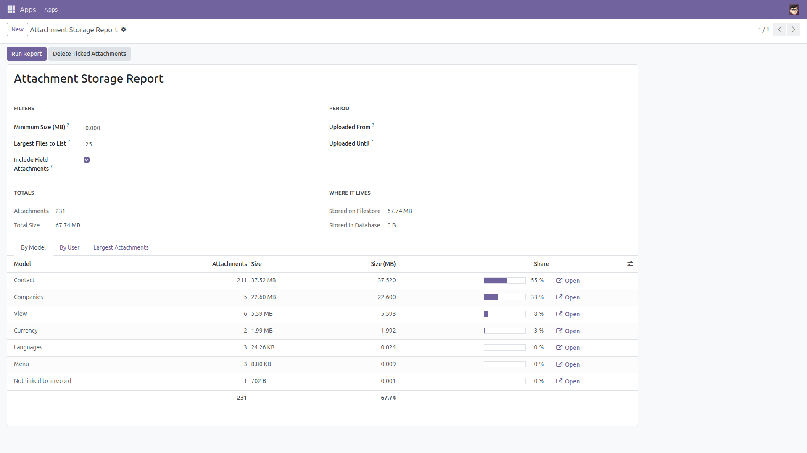
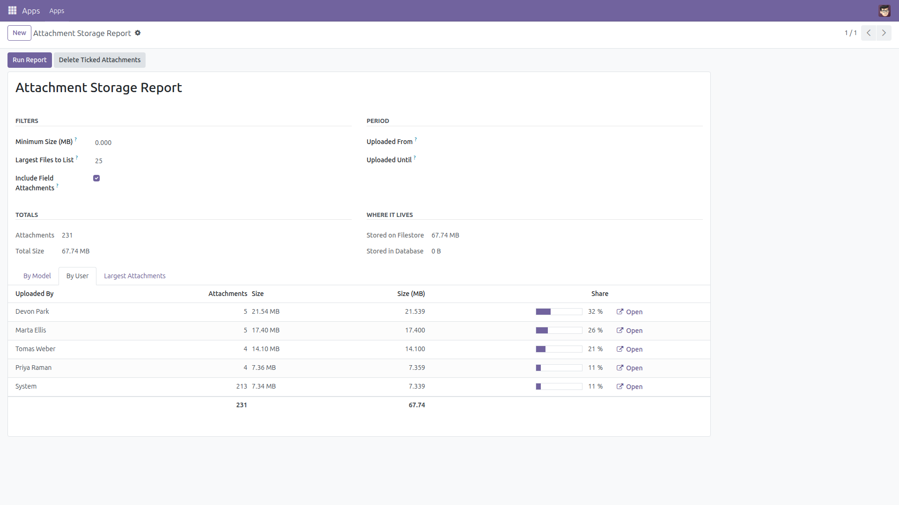
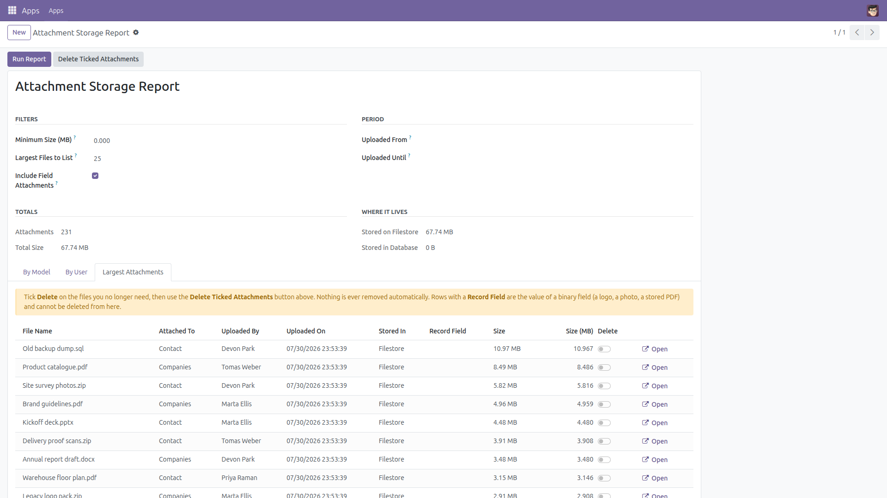

Attachment Storage Report
What is really eating your database and filestore.
When a database or filestore starts filling the disk, Odoo has no screen that answers the only question that matters: what is actually taking the space? This module adds a read-only storage report for administrators — attachments grouped by model and by uploading user, split between filestore and database, plus a list of the largest files and a minimum-size filter so the thousands of tiny records stop hiding the real offenders.
Free and open source (LGPL-3), Odoo 14.0 through 19.0.
- By model — see at a glance whether contacts, products or stored report PDFs own your disk.
- By user — find the person whose uploads grew fastest, with each one's share of the total.
- Largest attachments — the biggest files, with owner, upload date and where they are stored.
- Size threshold — ignore everything under N MB and look only at what matters.
- Filestore vs database — totals for both, so you know which one to grow.
- Fast — every figure is aggregated by PostgreSQL, never by loading attachments one by one.
- Safe by default — the report is read-only and reserved to Settings administrators. Nothing is ever deleted automatically; the optional cleanup removes only the files you tick, after an explicit confirmation, and refuses files that are the value of a binary field so a logo or a photo can never be erased by mistake.
The report aggregates the attachment table directly in SQL. It therefore reports on every attachment in the selected companies, including documents the administrator would not be able to open individually — which is why it is restricted to the Settings group. In multi-company databases only the companies selected in the company switcher are counted.
Screenshots

Storage grouped by model, with each model's share of the total and a shortcut to its attachments.

The same totals grouped by the user who uploaded the files.

The largest files, where they are stored, and an opt-in tick box for the confirmed cleanup.
Installation
- Copy the
attachment_storage_report folder into your addons path (or install it from the Apps store).
- Open Apps, click Update Apps List, search for Attachment Storage Report and click Install.
- No external Python library and no other module is required — it only depends on
base.
Configuration
- There is nothing to configure. The report works on the attachments already in your database.
- Access is limited to the Settings group (Administration: Settings). Give that group to anyone who should be able to run the report.
- In multi-company databases the report only counts the companies currently selected in the company switcher.
Usage
- Go to Settings → Attachment Storage → Storage Report. The report opens already computed.
- Read the totals: how many attachments, how much space, and how it splits between the filestore and the database.
- Use the By Model and By User tabs to find the biggest consumers, and the Open button on a row to jump to those attachments.
- Raise Minimum Size (MB) (and optionally set an upload period), then click Run Report to recompute with the new filter.
- Open the Largest Attachments tab to see the biggest files. Tick Delete on the ones you no longer need and click Delete Ticked Attachments; a confirmation dialog appears and only the ticked files are removed.
Version notes
Identical behavior on every supported series (14.0 – 19.0).
License: LGPL-3 · Source on GitHub · Issues and contributions welcome.